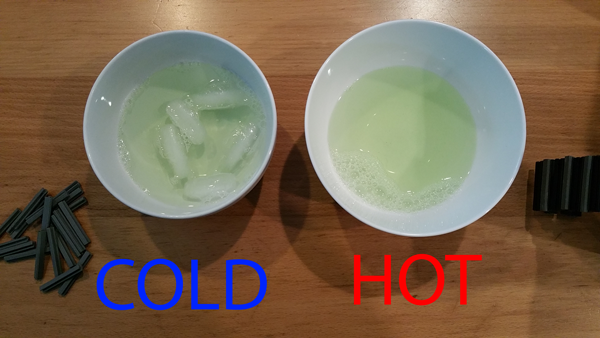
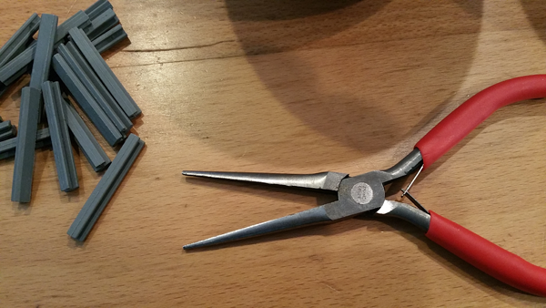
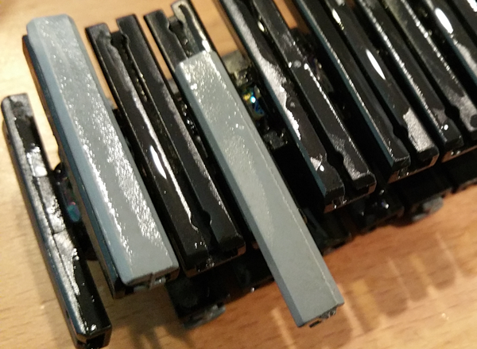
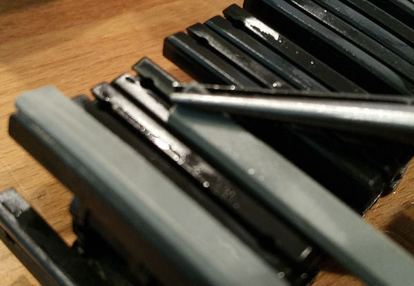

I am so done with these treads. For the past three hours I have worked to soak the treads and tread inserts in dish soap. *takes deep breath* The process is painstakingly slow and also literally painful. The process itself seems simple but after soaking both pieces the insert must be pushed in with a considerable amount of force. This is not user friendly and is not what the company who produces the inserts advertised as "ease of use". This process will be finished in a few meetings because it's ow and slow.
This tread insert reallllly needs to be effective given the trouble I've gone through. We don't think the Tetrix treads will be able to get up the mountain without this extra bit of grip. But if they still don't help - huuugge waste of time. At this rate it's averaging about 4 minutes per tread. And we have 100 rubber inserts across both tracks. Will do some tests with just one track when the motors are fully installed so we can decide whether to invest the time in the other track.
[Time Passes] We probably need a complete track drive (both nacelles) to properly test their ability to climb over the churros, so thought more about the problem and came up with some improvements. First we decided to use a lot more water to make it easier to get the slippery solution into the crevices of the inserts. We found a 10 to 1 mixture of water to dish soap was still very slippery.
We then decided to try controlling the temperature to shrink the rubber inserts and expand the treads. So we chilled some solution with ice and heated the other in the microwave. We are not sure if the chilled solution shrank the rubber, but it did make it much stiffer, making the initial push into the tread easier. The more important improvement was the heated solution - it definitely increased the gap temporarily, making it easier to slide the insert in. The hotter the better. We kept reheating to the point of discomfort because the tracks soaked up a lot of heat very quickly.
We also improved our technique. The chilled treads still go in only part way when pushing them into the hot tread. The rubber insert starts warming up quickly and the heat makes them even more squishy - so you can't push them in. But you can pull them in with very pointy needle-nose pliers. You have to get the pliers between tread and the insert - digging in pretty agressively. The inserts can take a surpising amount of abuse. We didn't tear a single one of them. It also helped that we had assembled the tracks before and weren't trying to do this with individual treads. One more piece of advice - pull the insert away from you so you don't stab yourself when you lose your grip.
  Now the process went much faster. In a kind of assembly line, we can get one insert done every 30 seconds:
We managed an 8x increase in assembly speed and will be able to mount both tracks at our next meet.